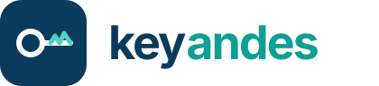

Disponibilidad revisada en el registro de .com (Verisign) el 16 de noviembre de 2026.

KeyAndes · recomendado
"Key" (la llave de tu casa) + los Andes: identidad regional que sirve para Ecuador, Perú, Colombia y Bolivia. El ícono es una llave con la cordillera.
keyandes.com libre · sin inmobiliaria con ese nombre
HomeLatam
Se entiende al instante: casas en Latinoamérica. Ideal si piensas vender el producto fuera de Ecuador.
homelatam.com libre
NestAndes
"Nest" = nido, hogar. Más cálido y familiar, con la cordillera como sello.
nestandes.com libre